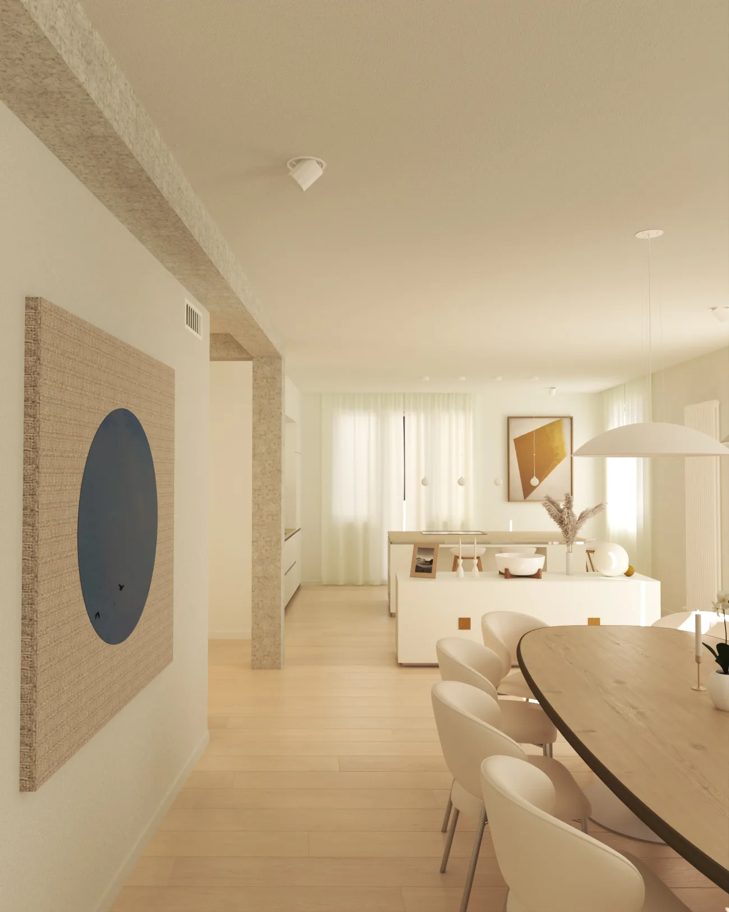

Ein Haus in Italien aus dem Ausland sanieren

Der Kauf eines Hauses in Italien ist oft der Beginn einer Sanierung. Wer im Ausland lebt, hat meist dieselben Fragen: Welche Genehmigungen sind nötig, was darf verändert werden, und wie lassen sich die Arbeiten verfolgen, ohne vor Ort zu sein?
Genehmigungen
In Italien hängt die nötige Genehmigung von den geplanten Arbeiten ab. Für Streichen oder neue Böden ist in der Regel keine nötig. Das Versetzen von Innenwänden oder die Erneuerung der Haustechnik erfordert meist eine CILA, eine Anzeige, die ein Architekt oder Ingenieur bei der Gemeinde einreicht. Arbeiten an der Tragstruktur erfordern eine SCIA, Neubauten und größere Umbauten eine Baugenehmigung (permesso di costruire). Ändert sich der Grundriss, muss nach Abschluss der Arbeiten auch das Kataster (catasto) aktualisiert werden.
Altstädte und denkmalgeschützte Gebäude
Viele Häuser, die Käufer aus dem Ausland begeistern, liegen in Altstädten. Dort legen kommunale Regeln fest, was verändert werden darf, und denkmalgeschützte Gebäude brauchen zusätzlich die Zustimmung der Soprintendenza, der Denkmalbehörde. Das sollte man vor dem Kauf prüfen, denn es bestimmt, was möglich ist und wie lange es dauert.
Eine Erfahrung in Rom
2022 betreute ich bei Interalia Architects in Rom die Sanierung einer Wohnung an der Piazza Navona, mitten in der Altstadt, für eine englische Kundin.
Die Arbeiten aus dem Ausland begleiten
Ich kommuniziere auf Englisch und Italienisch, und ein Projekt lässt sich aus der Ferne verfolgen. Renderings, Virtual Reality und Videos, erstellt mit VISION, zeigen die Räume, bevor sie gebaut werden; Videocalls ersetzen die meisten Termine, und Reisen nach Italien beschränken sich auf die wichtigen Momente, etwa die zentralen Entwurfsentscheidungen und den Abschluss der Arbeiten. Das Studio kümmert sich um die Baugenehmigungen und die Bauleitung.
Wo ich arbeite
Das Studio hat seinen Sitz in Modena in der Emilia-Romagna und arbeitet in ganz Italien. Zu den jüngsten Projekten gehören eine Wohnung mit Freskendecken in der Altstadt von Modena (Via Carteria) und die Innenräume eines neuen Wohngebäudes in Castelfranco Emilia (Le Pietre). Mehr auf der Seite Leistungen.